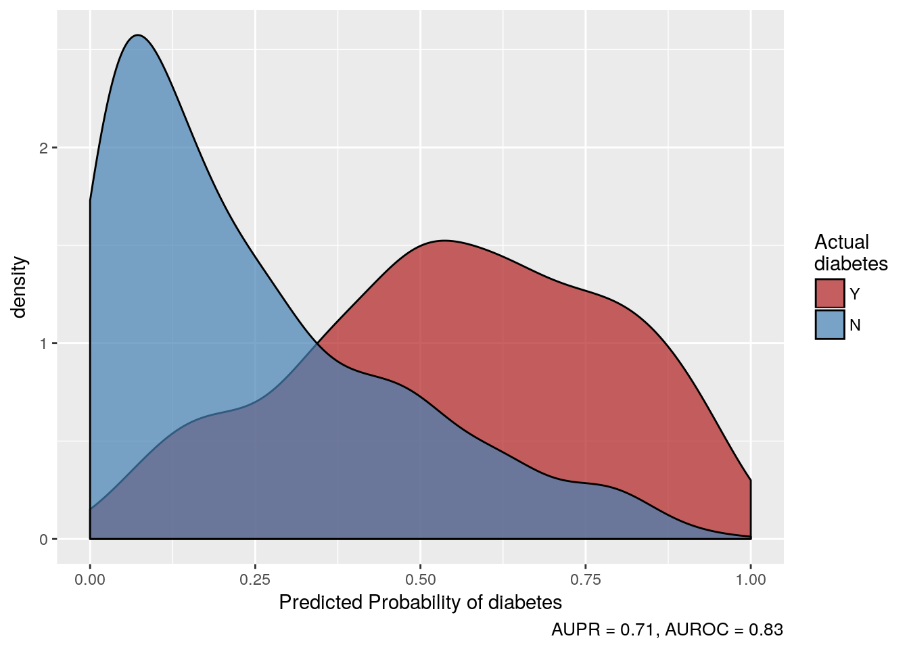
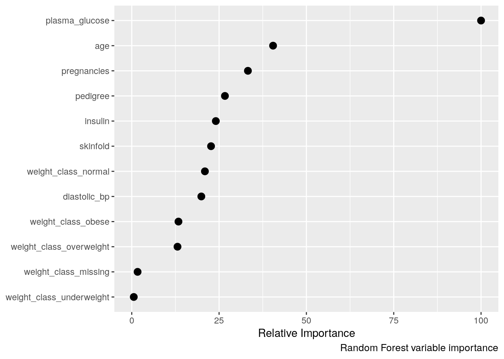

Section 4 Machine Learning for the Clinical Work
Machine learning techniques can be used to analyze medical data and empower clinicians in their decision making processes. Eventhough these models have proven to be very effective in other fields, it is important to keep in mind that the application of machine learning, artificail intelligence and computational statistics to the clinical sciences should always come with close supervision by professionals who understand both approaches.
This document shows some applications that could significantly impact the decision making process in the clinical context.
4.1 Preprocessing Data
A database from diabetes in the Pima Indians is used for this example:
library(healthcareai)
str(pima_diabetes)## Classes 'tbl_df', 'tbl' and 'data.frame': 768 obs. of 10 variables:
## $ patient_id : int 1 2 3 4 5 6 7 8 9 10 ...
## $ pregnancies : int 6 1 8 1 0 5 3 10 2 8 ...
## $ plasma_glucose: int 148 85 183 89 137 116 78 115 197 125 ...
## $ diastolic_bp : int 72 66 64 66 40 74 50 NA 70 96 ...
## $ skinfold : int 35 29 NA 23 35 NA 32 NA 45 NA ...
## $ insulin : int NA NA NA 94 168 NA 88 NA 543 NA ...
## $ weight_class : chr "obese" "overweight" "normal" "overweight" ...
## $ pedigree : num 0.627 0.351 0.672 0.167 2.288 ...
## $ age : int 50 31 32 21 33 30 26 29 53 54 ...
## $ diabetes : chr "Y" "N" "Y" "N" ...Since the objective here is to find the algorithm that best classifies to predict who will have diabetes and who won´t, a subset of classification algorithms is trained and evaluated to find the best option.
load("~/Dropbox/PhD UABC/Colaborations/Loma Linda/bookdown-demo-master/mlClinical.RData")
#quick_models <- machine_learn(pima_diabetes, patient_id, outcome = diabetes)Once the trainning process is finished, the highest performing algorithm can be selected:
quick_models## Algorithms Trained: Random Forest, k-Nearest Neighbors
## Target: diabetes
## Class: Classification
## Performance Metric: AUROC
## Number of Observations: 768
## Number of Features: 12
## Models Trained: 2018-07-12 13:37:01
##
## Models tuned via 5-fold cross validation over 8 combinations of hyperparameter values.
## Best model: Random Forest
## AUPR = 0.7, AUROC = 0.83
## Optimal hyperparameter values:
## mtry = 5
## splitrule = gini
## min.node.size = 15It is important to highlight the area under a ROC result: 0.85, which can be interpreted as good. This means that we can proceed to a classification process with this model.
#predictions <- predict(quick_models)
predictions## # A tibble: 768 x 14
## diabetes predicted_diabetes pregnancies plasma_glucose diastolic_bp
## * <fct> <dbl> <int> <dbl> <dbl>
## 1 Y 0.653 6 148 72
## 2 N 0.128 1 85 66
## 3 Y 0.654 8 183 64
## 4 N 0.00936 1 89 66
## 5 Y 0.495 0 137 40
## 6 N 0.257 5 116 74
## 7 Y 0.0379 3 78 50
## 8 N 0.577 10 115 72.4
## 9 Y 0.744 2 197 70
## 10 Y 0.348 8 125 96
## # ... with 758 more rows, and 9 more variables: skinfold <dbl>,
## # insulin <dbl>, pedigree <dbl>, age <int>, weight_class_normal <dbl>,
## # weight_class_obese <dbl>, weight_class_overweight <dbl>,
## # weight_class_other <dbl>, weight_class_missing <dbl>plot(predictions)
4.1.1 Data preparation
split_data <- split_train_test(d = pima_diabetes,
outcome = diabetes,
p = .9,
seed = 84105)
prepped_training_data <- prep_data(split_data$train, patient_id, outcome = diabetes,
center = TRUE, scale = TRUE,
collapse_rare_factors = FALSE)4.2 Model Training
#models <- tune_models(d = prepped_training_data,
# outcome = diabetes,
# models = "RF",
# tune_depth = 25,
# metric = "PR")
models## Algorithms Trained: Random Forest
## Target: diabetes
## Class: Classification
## Performance Metric: AUPR
## Number of Observations: 692
## Number of Features: 13
## Models Trained: 2018-07-12 13:38:05
##
## Models tuned via 5-fold cross validation over 23 combinations of hyperparameter values.
## Best model: Random Forest
## AUPR = 0.72, AUROC = 0.84
## Optimal hyperparameter values:
## mtry = 4
## splitrule = extratrees
## min.node.size = 134.2.1 Clinical importance of each variable
get_variable_importance(models) %>%
plot()
This image is very important for clinical use, because it facilitates the visualization of each variable and how much it imapcts the final result (having diabetes). This analysis can be implemented to different pathologies.